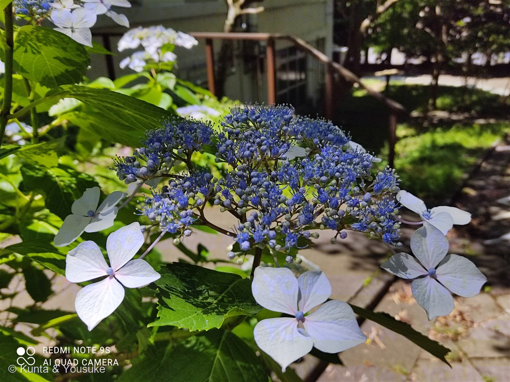
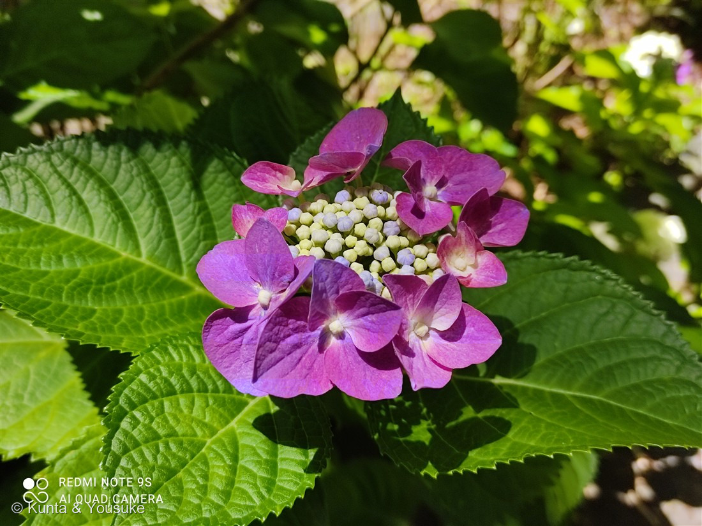
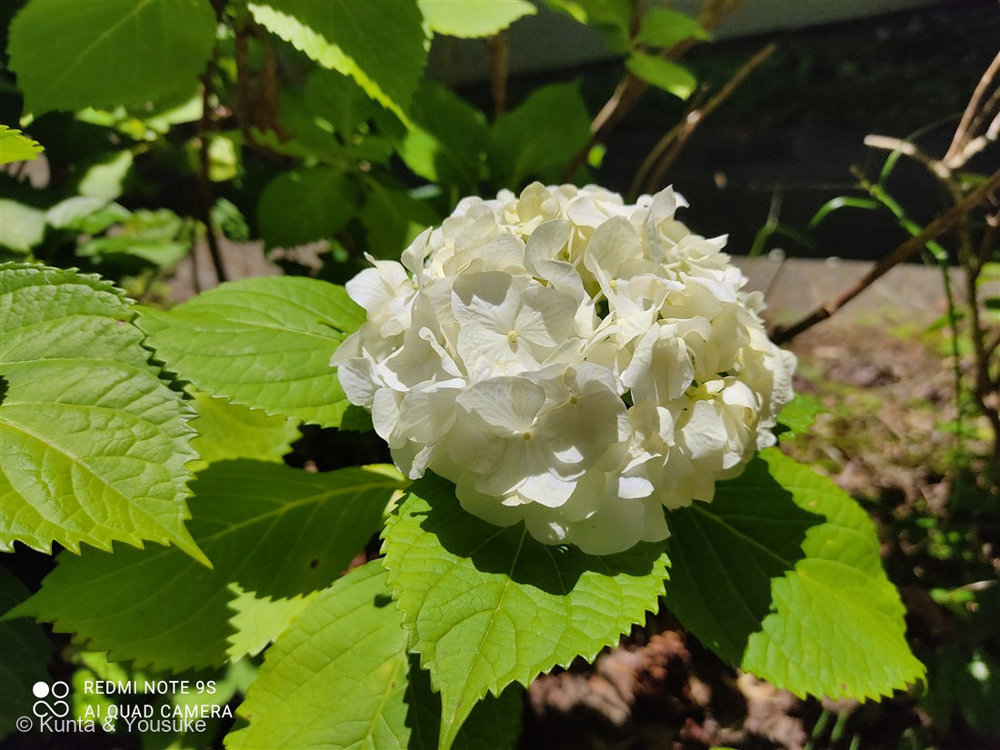

地図を読み込んでいるよ…
🔍 写真も地図も、押しているあいだ拡大して見られるよ（スマホは指を置いてすこし待ってね）。
🌍 の地図＝この子がもともと自生している場所を緑に。日本原産。野生型のガクアジサイは房総半島・三浦半島・伊豆半島など、関東〜東海の暖かい海岸に自生する。園芸種が世界じゅうに広まった。
⭐日本原産——アジサイの母種ガクアジサイは、房総半島（千葉）・三浦半島（神奈川）・伊豆半島（静岡）など関東〜東海の暖かい海岸に自生する在来種だよ。⭐だから今回は「日本」を塗っている——梅雨の花アジサイは、日本もふるさとなんだ。⚠地図は県ごと塗っているけど、実際は海沿いのがけや林のふち。世界じゅうのアジサイは、この日本のガクアジサイから園芸で生まれたよ。
⚠ 地図は国（日本と中国だけ県・省）までしか塗れないから、ほんとうの分布より広く見えていることがあるよ。地図はだいたいの場所。正確なところは、上の文を見てね。
アジサイ（紫陽花）
Hydrangea macrophylla (Thunb.) Ser.
別名 · ホンアジサイ／セイヨウアジサイ（手まり咲き）／ガクアジサイ（野生型）／ 原産 · 日本／ 見どころ · ⭐「花びら」はがく・土で色が変わる・額咲きと手まり咲き
アジサイ科 · Hydrangeaceae（アジサイ属 Hydrangea）── 083 ギンバイソウと同じ科・ミズキ目
名前と学名の由来 ── 「水の器」と「大きな葉」
- ⭐属名 Hydrangea（ヒドランゲア）＝ギリシャ語 hydōr（水）＋ angeion（器・うつわ）で「水の器」。花のあとにできる小さなさく果（実）がコップ（水がめ）のような形をしていることにちなむ。
- ⭐種小名 macrophylla（マクロフィラ）＝ macro（大きい）＋ phylla（葉）で「大きな葉」。あのつやつやの大きな葉っぱそのものだね。
- ⭐和名アジサイ（紫陽花）の語源は「集真藍（あづさゐ）」＝「藍色の花が集まって咲く」という説が有力。青い小花が寄り集まる姿が、そのまま名前になった。
- ⭐同じアジサイ科・アジサイ属の仲間が、図鑑にもう1ついるよ → 083 ギンバイソウ（山地の樹陰の子）。「アジサイ」そのものは、図鑑の名前みたいな子なのに、133番でやっと登場したんだ。
この植物のこと
- アジサイ科アジサイ属の落葉低木。日本原産で、野生型のガクアジサイは関東〜東海の暖かい海岸に自生する。そこから園芸化され、いまや梅雨の代名詞として世界じゅうで愛されている。
- ⭐⭐「花びら」に見えているのは、じつは がく（萼）。大きく開いた4枚は装飾花＝中性花で、おしべもめしべも退化して飾りに徹している。本当の花は、まん中でつぶつぶに咲いている小さいほう（両性花）なんだ。虫は目立つ装飾花にさそわれて、まん中の本当の花にたどりつく——看板と本店、みたいな役わけだね。
- ⭐咲き方に2タイプあるよ（①②と③のちがい）：額（がく）咲き＝装飾花がまん中の両性花のまわりを額縁のように囲む（野生型ガクアジサイ・写真①②）。手まり咲き＝装飾花がまるく全部を覆って毬になる（園芸のホンアジサイ・写真③の白い毬）。
- ⚠葉やつぼみには毒（青酸配糖体）があるとされ、食べるとお腹をこわす。飾りで料理に添えて食べてしまった事故の例もある。きれいだけど、口には入れないでね。
同定について
- 3枚とも Hydrangea macrophylla（アジサイ）とみて、1ページにまとめたよ。額咲き（①②）と手まり咲き（③）は別の花に見えるけど、同じ種の中の「花序のタイプちがい」（と園芸品種のちがい）。色ちがいも同種の中のことなんだ。
- ⚠正直に言うと、①の青い額咲きだけは、葉がやや細めで、ヤマアジサイ（H. serrata・別種）の可能性もほんの少し残る。ヤマアジサイは葉が薄く光沢が少なく、全体に小ぶり。今回は葉の厚み・光沢から macrophylla 寄りと判断したけど、断定はしないでおくね。
⭐ 土で色が変わるふしぎ ── 「変わる子・変わらない子」は見分けられる？
燻太さんの質問に、正直に答えるね。まずなぜ色が変わるのか——
- アジサイの青やピンクは、アントシアニンという色素1種類が作っている。この色素は、そのままだと赤〜ピンク。
- そこに土から吸い上げたアルミニウムが結びつくと、青に変わる。
- アルミが花まで届くかは土の酸性・アルカリ性で決まる。酸性の土＝アルミが溶けて根に吸われる→青／アルカリ性の土＝アルミが吸われない→ピンク・赤。（※リトマス試験紙と逆で「酸性が青」だから、ちょっとまぎらわしいね。）
では「変わる子・変わらない子」は見分けられる？ ── 確実に言えるのは1つだけなんだ：
- ⭐白い子（③のような白）は、そもそもアントシアニン＝色素を持っていない。だから土をどういじってもずっと白のまま＝変わらない。これは見た目で確実に言える。
- 色つきの子（青・ピンク・赤紫）は、基本みんな色素を持っているから、土しだいで青にもピンクにも動きうる。だから「色つき」を見ただけでは「変わる/変わらない」は当てられない。
- ただし例外で、遺伝的にアルミを取り込みにくい・赤が強く出る品種（真っ赤なアジサイなど）は、土を酸性にしても青くなりにくい＝実質「変わりにくい」子もいる。でもこれは花の見た目だけからは判別しづらい。
- → まとめると、「白なら変わらない、と確実に言える。色つきなら基本は変わりうるけど、どのくらい動くかは品種と土しだいで、見た目だけでは見分けられない」。確実に知りたければ、品種名（ラベル）で調べるのが一番の近道だよ。
お滝さんのアジサイ
江戸時代の終わり、長崎の出島にいた医師シーボルトは、日本のアジサイをヨーロッパに紹介して、学名に Hydrangea otaksa（オタクサ）と名づけた。これは、彼が愛した日本人女性「お滝さん（おたきさん）」にちなんだ、という有名なお話。いまは otaksa は macrophylla に含められて正式な名前ではなくなったけれど、梅雨の花に、そんな恋の物語がしのばせてあったんだね。
日本で古くからあった手まり咲きが、ヨーロッパへ渡って改良され、色とりどりのセイヨウアジサイになって、また日本へ帰ってきた——アジサイは、海を渡って里帰りした花でもあるんだ。
参考：Wikipedia「アジサイ」（アジサイ科アジサイ属・日本原産のガクアジサイが母種／装飾花は中性花・本当の花は両性花／土壌pHとアルミニウムで花色が変わる／シーボルトと otaksa）